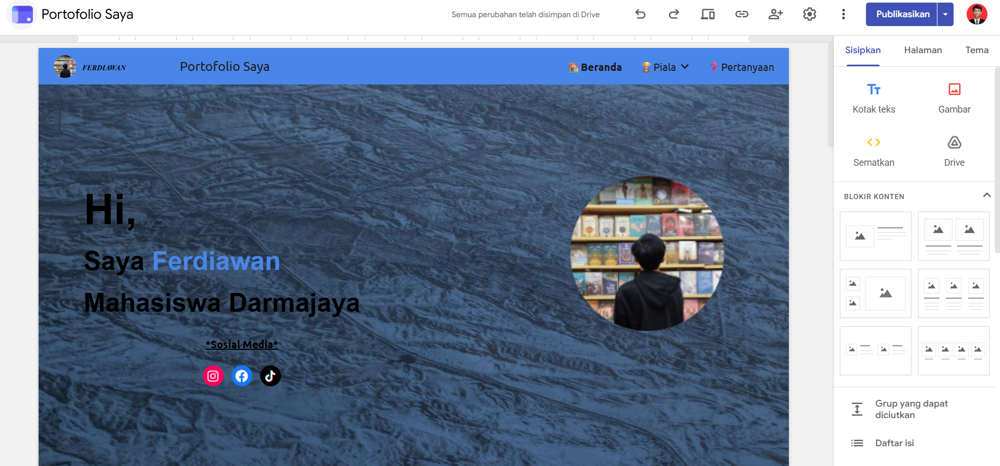

Website portofolio pribadi yang dibuat menggunakan Google Sites sebagai media untuk menampilkan profil, pengalaman, project, kemampuan, serta berbagai pencapaian secara digital.

Portfolio Website Google Sites merupakan website portofolio pribadi yang dibuat sebagai media untuk memperkenalkan profil dan pengalaman secara online.
Website ini digunakan untuk menampilkan informasi mengenai diri sendiri, pengalaman profesional, project yang pernah dikerjakan, sertifikasi, pencapaian, serta kemampuan yang dimiliki.
Website dibuat untuk membangun personal branding melalui media digital sekaligus menyediakan informasi portofolio yang dapat diakses dengan mudah oleh orang lain.
Website dikembangkan menggunakan Google Sites sebagai platform utama untuk membangun dan mengelola halaman portofolio. Desain halaman disusun dengan memperhatikan struktur informasi, navigasi, tampilan visual, dan kemudahan akses.